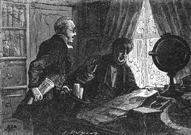

Doktorův přítel. – Kde vzniklo jich přátelství. – Dick Kennedy v Londýně. – Nenadálý, leč nikterak uspokojivý návrh. – Přísloví nehrubě potěšitelné. – Několik slov o mučenících afrických. – Výhody balonu. – Tajemství doktora Fergussona.
Doktor Fergusson měl přítele. Nikoli druhého já, alter ego; přátelství neobstálo by mezi dvěma bytostmi naprosto totožnými.
Než jakkoli Dick Kennedy a Samuel Fergusson byli obdařeni různými vlastnostmi, vlohami a letorou, žili přece jedním a týmž srdcem, a to je hnětlo nevalně. Naopak.
Tento Dick Kennedy byl Skot v pravém smyslu slova, upřímný, odhodlaný, umíněný. Bydlil v městečku Leithu u Edinburku, v samém podkraji „Starého čadila“.[7] Byl občas rybářem, ale vždy a všude rozhodným lovcem, což není nijak s podivením u Kaledoňana, jenž byl poněkud horalem Highlandů. Slynul jako podivuhodný střelec z karabiny; rozstřeloval nejen kulky na ostří nože, nýbrž roztínal je na dvě půlky tak stejné, když se potom zvážily, že nebylo téměř rozdílu ve váze.

Mnoho vynálezců přišlo mu nabídnout svoji soustavu.
Tvářnost Kennedyova připomínala silně tvářnost Halberta Glendinninga, jak ji líčí Walter Scott v „Klášteře“; byl postavy vyšší nad šest anglických stop[8]; vynikaje roztomilostí a nenuceností, zdál se býti nadán silou obrovskou; obličej silně osmahlý, živé černé oči, vrozená ráznost a srdnatost a posléze cosi laskavého a ryzího ve všem zevnějšku svědčily ve prospěch Skotův.
Dva přátelé seznámili se v Indii tehda, kdy oba sloužili u téhož pluku; zatím co Dick honil tygry a slony, honil se Samuel za rostlinami a hmyzy; ten i onen mohl se honositi obratností ve svém oboru, a kořistí doktorovou stala se nejedna vzácná rostlina, která stála rovněž za tolik, jako pár sloních klů.
Těmto dvěma mladíkům neudálo se nikdy, aby si zachránili život nebo si prokázali nějakou službu. Odtud jich nezvratné přátelství. Osud vzdálil je často od sebe, ale vzájemná příchylnost vždy je zase spojila.
Od té doby, co se navrátili do Anglie, byli nejednou rozloučeni dalekými výpravami doktorovými; než kdykoli tento zavítal domů, neopominul nikdy nikoli vyžádati si, nýbrž sám se věnovati na několik neděl společnosti svého přítele Skota.
Dick hovořil o minulosti, Samuel strojil se do budoucnosti: ten hleděl do předu, onen do zadu. Odtud neklidná mysl Fergussonova a úplná rovnodušnost Kennedyova.
Po cestě Tibetem odpočíval doktor bezmála dvě léta, nemluvě o nových výzkumech; Dick měl za to, že jeho cestovatelský pud, jeho touha po dobrodružstvech pominuly. Byl tím nadmíru potěšen. Bylo by to, soudil, dojista špatně skončilo dříve nebo později; nechať je člověk zvyklý čemukoli, necestuje bez trestu mezi lidojedy a dravou zvěří a proto domlouval Kennedy Samuelovi, aby zarazil, vykonav ostatkem až dost pro vědu a příliš mnoho pro lidskou vděčnost.
Po této domluvě přestal doktor na tom, že nic neodpověděl, trvaje v zamyšlenosti; pak se pustil do tajných výpočtů, trávil noci, moře se číslicemi, konali pokusy se zvláštními přístroji, jichž nikdo nechápal. Bylo zjevno, že mu vře v mozku veliká myšlenka.
„O čem tak asi přemýšlel?“ otázal se Kennedy sám sebe, když přítel od něho odešel, vrátiv se v měsíci lednu do Londýna.
Dověděl se toho jednou ráno z článku Daily Telegraphu.
„Milosrdná nebesa!“ zvolal. „Ten blázen! nesmyslník! přeletět Afriku balonem! Nic jiného již nescházelo! O tom tedy přemítal na mysli po dvě léta!“
Místo všech těchto vykřičníků představte si pádné údery pěstí do hlavy, a nabudete pojmu o prostocviku, jejž hodný Dick provozoval takto sám s sebou mluvě.
Když mu jeho důvěrnice, stará Elspeth, namlouvala, že je to třebas jen žert a klam, odpověděl:
„Aj! což bych nepoznal člověka? Což se mu to nepodobá? Cestovat vzduchem! Hle, teď už je řevniv na orly! Ne, na mou věru, toho nebude! však mu to překazím! Ó! kdyby mu člověk popustil, vydal by se jednoho krásného dne na měsíc!“
Téhož večera vsedl Kennedy zpola znepokojený, zpola rozzlobený, do vlaku na General Railway stationu[9] a nazejtří dojel do Londýna.
Za tři čtvrti hodiny potom složila jej drožka u domku doktorova na Soho squareu v Greek streetu; vystoupiv po stupních opověděl se tím, že zabušil pětkrát na dveře pěstí pádně přiléhající.
Fergusson sám mu otevřel.
„Dick?“ prohodil valně se nedivě.
„Dick i nikdo jiný,“ odtušil zhurta Kennedy.
„Jakže, milý Dicku, ty v Londýně za zimních honeb?“
„Já v Londýně.“
„A proč jsi sem přijel?“
„Zamezit bezpříkladné bláznovství.“
„Bláznovství?“ opáčil doktor.
„Pravda-li, co píší tyto noviny?“ otázal se v odpověď Kennedy, nastavuje číslo Daily Telegraphu.
„Aha! o tom ty mluvíš! Ty noviny jsou velice žvastavé! Ale sedni si pak, milý Dicku.“
„Nesednu si. Zamýšlíš-li skutečně podniknout tu cestu?“
„Skutečně; mé přípravy jsou v plném proudu a…“
„Kde jsou tvé přípravy, ať je rozbiju na padrť? Kde jsou, ať z nich nadělám třísek?“
Hodný Skot rozpaloval se opravdovým hněvem.
„Jen klidně, milý Dicku,“ odvětil doktor. „Chápu tvou rozjitřenost. Horšíš se na mne, že jsem se ti dosud nesvěřil se svými novými záměry,“
„Tomu říká nové záměry!“
„Byl jsem příliš zaměstnán,“ mluvil dále Samuel nedada se másti, „měl jsem mnoho práce! Avšak upokoj se, nebyl bych odjel, abych ti nebyl psal…“
„Aj! na tom mi nesejde…“
„Poněvadž jest mým úmyslem vzít tě s sebou.“
Skot vymrštil se skokem, za nějž nebyl by se hanbil ani kamzík. „Á tak!“ zvolal, „ty chceš, aby nás oba zavřeli do Betlehemu![10]“
„Bezpečně jsem na tebe spoléhal, milý Dicku, a vyvolil jsem tebe dav výhost mnoha jiným.“
Kennedy strnul úžasem.
„Vyslechni mě,“ odpověděl pokojně doktor, „a než uběhne deset minut, poděkuješ mi.“
„Mluvíš-li do opravdy?“
„Zce a do opravdy.“
„A odepru-li provázet tě?“
„Neodepřeš.“
„A odepru-li přece?“
„Odjedu sám.“
„Posaďme se,“ pravil lovec, „a mluvme klidně. Jakmile nežertuješ, stojí za práci, aby se dal člověk do přetřesu.“
„Dejme se do něho snídajíce, ač nejsi-li od toho, milý Dicku.“
Dva přátelé zasedli vůči sobě za stolek mezi kupu sandwichův[11] a velký samovar.
„Milý Samuele,“ ujal se slova lovec, „tvůj záměr jest nesmyslný! je nemožný! nemá do sebe nic vážného, ani uskutečnitelného!“ – „To zajisté uvidíme, až učiníme pokus.“
„Ale vždyť o to právě běží, aby se učinil.“
„Proč, smím-li se ptát?“
„Což nebezpečenstva a překážky všeliké?“
„Překážky,“ vážně odvětil Fergusson, „jsou proto vynalezeny, aby se překonávaly; co se pak týče nebezpečenstev, kdo si může lichotit, že není v ně vydán? Všecko v životě jest nebezpečím; může být velmi nebezpečno sednouti si za stůl anebo nasaditi si klobouk na hlavu; mimo to co má nastati, sluší považovat za věc již nastalou a spatřovat v budoucnosti jen přítomnost, neboť budoucnost není ničím jiným nežli přítomností o něco vzdálenější.“
„Což o to!“ pokrčil Kennedy rameny. „Ty’s od jakživa fatalistou.“
„Od jakživa, ale v dobrém smyslu slova. Pročež pusťme mimo sebe, co nám chystá osud, a nezapomínejme nikdy na naše dobré anglické přísloví: Kdo se narodil pro šibenici, nikdy se neutopí!“
Na to nebylo lze nic odpověděti, což však Kennedyovi nevadilo, aby se nevytasil s novou řadou důvodů, jichž možno se snadno domysliti, které však tuto vypravovati příliš dlouho by trvalo.
„Zkrátka a dost,“ pravil, když byli hodinu rokovali a rozkládali, „chceš-li stůj co stůj přerazit Afriku, je-li toho třeba ku tvému štěstí, proč se nepustíš obvyklými cestami?“
„Proč?“ odpověděl doktor, rozjařuje se; „poněvadž až dosud setkaly se veškery pokusy se zmarem! Poněvadž od Munga– Parka, zavražděného na Nigru, po Vogela, zmizelého ve Vadaji, od Oudneye, zemřelého v Myrmyru, Clappertona, zemřelého v Sokotu, po Francouze Maizana, na kusy rozsekaného, od majora Lainda, zabitého Tuaregy, po Roschera z Hamburku, utraceného počátkem roku 1860, mnoho obětí přibylo do seznamu mučeníkův afrických! Poněvadž je nemožno zápasiti se živly, hladem, žízní, zimnicí, dravou zvěří a s národy nad šelmy divočejšími! Poněvadž čeho nelze učiniti tímto způsobem, to dlužno předsevzíti oním způsobem! Poněvadž posléze tam, kde nelze jíti prostředkem, třeba jíti stranou nebo horem!“
„Kdyby nešlo o nic jiného, než jíti horem!“ namítal Kennedy; „ale kterak jíti přes?“
„Aj!“ odvětil doktor s největší chladnokrevností na světě, „čeho bych se strachoval? Uznáš zajisté, že jsem učinil taková opatření, abych byl prost obavy, že můj balon spadne; selže-li mi přec, octnu se na zemi za obyčejných okolností výzkumných cestovatelů; leč můj ba on mne nezklame, s tím netřeba počítat!“
„Naopak, s tím třeba počítati.“
„Nikoli, milý Dicku. Doufám pevně, že se s ním nerozloučím, dokud nedostihnu západního pobřeží afrického. S ním jest možno vše, bez něho zabřednu v přirozená nebezpečenstva a překážky podobné výpravy; s ním není se obávati ani vedra, ani proudův, ani bouří, ani samumu, ani nezdravého podnebí, ani šelem, ani lidí! Bude-li mi příliš horko, vystoupím; pakli mi bude zima, sestoupím; přes horu se přehoupnu, přes propast se přenesu, přes řeku přeletím; bouři uniknu do výše; přes bystřici mihnu se jako pták! Poberu se vpřed bez únavy, zastavím se, nepotřebuje odpočinku! Budu se vznášeti nad novými městy! Poletím s rychlostí vichru, hned v největších vzdušných výsostech, hned na sto stop od země, a mapa Afriky rozvine se před mými zraky největším atlasem na světě!“
Hodný Kennedy cítil se rozechvěn, a přece ho divadlo na oči mu vykouzlené jímalo závratí. Pohlížel na Samuela s obdivem, ale také s bázní; bylo mu, jako by se již kolísal v povětrném prostoru.
„Počkej,“ pravil, „počkej trochu, milý Samuele, což jsi vynalezl způsob říditi balony?“
„Ani pomyšlení. Toť holá nemožnost.“
„Ale vždyť půjdeš…“
„Kam se zalíbí Prozřetelnosti; nicméně však od východu na západ.“
„Proč to?“
„Poněvadž doufám, že budu moci použit passátních větrů, které vějí stálým směrem.“
„Ó! skutečně!“ pravil Kennedy, přemýšleje: „passátní větry… zajisté… člověk může opravdu… je to něco…“
„Je-li to něco! ne, milý brachu, je to vše. Anglická vláda ustanovila mi dopravní loď k službám; rovněž bylo umluveno, že tři nebo čtyři lodi odplují k západnímu pobřeží a budou tam křižovat asi v dobu, kdy lze se nadíti mého příchodu. Nejdéle za tři měsíce budu v Zanzibaru, kde provedu nadmutí svého balonu, a odtamtud vyrazíme…“
„My?“ prohodil Dick.
„Což se můžeš ještě vytasiti se stínem nějaké námitky? Mluv, příteli Kennedy.“
„Nějaké námitky? mám jich na tisíc; ale mimo jiné pověz mi: hodláš-li viděti zemi, hodláš-li vzestupovat a sestupovat po libosti, nedovedeš toho, leč se ztrátou plynu; až dosud nebylo jiného prostředku k tomu a to bylo vždy na závadu dlouhým poutem vzdušným oborem.“
„Milý Dicku, povím ti jen tolik, že neztratím ani atomu plynu, ani molekuly.“
„A sestoupíš po libosti?“
„Sestoupím po libosti.“
„A kterak to vyvedeš?“
„To jest mým tajemstvím, příteli Dicku. Měj důvěru a přijmi za své moje heslo: ,Excelsior!‘“
„Ať žije ,Excelsior!‘“ odpověděl lovec, jenž neznal latinského slova.
Leč proto byl přec pevně odhodlán opříti se odjezdu přítelovu vší silou a všemi prostředky. Tvářil se tudíž, jako by se s ním srovnával, a přestal na tom, že pozoroval. Samuel pak odešel dohlédnout k přípravám.